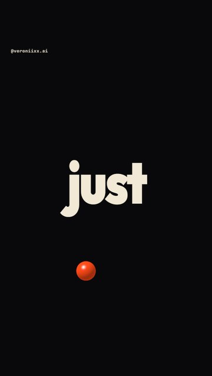
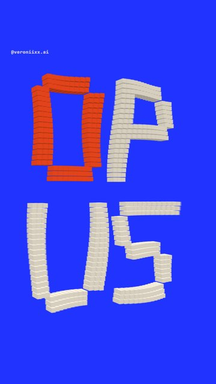

Made
by code,
not by hand.
How to build a looping motion showreel with music in Claude Code: words on the beat, a pendulum, a lamp, cubes. From install to a finished mp4. Windows and Mac.




What you get
A vertical 1080×1920 video that loops with no visible seam. Type on the beat, light, 3D cubes and music synthesised in code. You describe what you want to see. Claude writes the code, renders the frames, makes the sound and muxes the file.
What you need
- A computer with Windows 10/11 or macOS. A GPU helps with the 3D parts: without one the render takes noticeably longer.
- A Claude Pro plan or higher. Claude Code is included.
- About 3 GB of free space and an internet connection.
How it works
Install five tools
Everything installs from the terminal. Copy the whole block, paste, press Enter.
1Open a terminal
Windows
Press the Win key, type PowerShell, open it.
Mac
Press Cmd + Space, type Terminal, open it.
2Install Node.js, Git, Python and ffmpeg
Windows Paste one line at a time. Answer Y when the installer asks.
winget install -e --id OpenJS.NodeJS.LTS winget install -e --id Git.Git winget install -e --id Python.Python.3.12 winget install -e --id Gyan.FFmpeg
Mac Homebrew first. It is an installer for Mac software and it will ask for your computer password.
/bin/bash -c "$(curl -fsSL https://raw.githubusercontent.com/Homebrew/install/HEAD/install.sh)"
At the end Homebrew prints two lines under “Next steps”. Copy them from your own terminal and run them. Then:
brew install node git python ffmpeg
3Install Claude Code
Same on Windows and Mac:
npm install -g @anthropic-ai/claude-code
Prefer no terminal? Get the Claude desktop app at claude.ai/download. Its Code tab does the same thing.
4Check that it all works
Windows
node -v; python --version; ffmpeg -version; claude --version
Mac
node -v; python3 --version; ffmpeg -version; claude --version
Each command should answer with a version number. If one says “not found”, close the terminal, open it again and retry.
Make a folder and start Claude
1Folder and launch
Windows
mkdir $HOME\showreel cd $HOME\showreel claude
Mac
mkdir ~/showreel cd ~/showreel claude
On first launch Claude opens a browser and asks you to sign in. Sign in and come back to the terminal.
2First prompt: setup
Paste this into Claude. It installs what is needed and checks that 3D graphics render.
Set up a project for motion videos in this folder. 1. Install Remotion (React 18 + TypeScript). 2. Create a Python environment .venv and install numpy, scipy, soundfile, pyloudnorm into it. 3. Check that ffmpeg is available from the terminal. 4. Make a test composition, 1080×1920, 30 fps, with a simple WebGL shader on a canvas. Render one frame to PNG (chromiumOptions gl: 'angle') and show me the file path. If something is missing, install it yourself and tell me what you installed. If something fails, do not stop: find the cause and fix it.
The brief that makes the film
This is the brief of my film. Square brackets mark what you change: words, colours, handle.
Build a looping motion showreel: 19.2 seconds, 576 frames, 30 fps, 1080×1920, H.264 CRF 18, yuv420p. It shows what [Claude / my brand] can do with type, light and depth. GRID (the main rule) Tempo 150 BPM. At 30 fps one beat = 12 frames, one bar = 48 frames. 12 bars in total. Every animation and every sound is counted from this grid. STACK Remotion + React + TypeScript for video. WebGL2 shaders on a canvas for the 3D parts (render with chromiumOptions gl: 'angle'). Python + numpy + scipy + soundfile + pyloudnorm for sound. ffmpeg for the final mux. Fonts: Outfit Black for words, Anton for tall headlines, JetBrains Mono for the handle. PALETTE Ink [#09090B], bone [#F1E8D6], one accent [#FF4A17], a second colour for the montage [#2133FF]. HERO One orange ball travels through the whole film: it bounces on the beat, becomes a pendulum weight, becomes a lamp, and returns to the centre at the end. PARTS 1. WORDS ON THE BEAT (bars 1–2). One word per beat: "[we / don't / just / prompt. / we / direct. / type / light / depth]". The background flips between ink and bone on every word. Nothing else on screen except the ball, which hops from edge to edge on each word. 2. PENDULUM (bars 3–5). The ball flies up and becomes a pendulum weight. Each swing wipes the phrase and writes the next: "[MADE BY HAND? / MADE BY CODE. / NO TIMELINE. / NO KEYFRAMES. / JUST WORDS. / AND LIGHT.]". The swing is uneven: a fast pass through the text, then the weight hangs at the far point so each phrase stays fully readable for half a second. The last swing wipes the frame to dark. 3. LAMP (bars 6–8). The same ball leaves the pendulum, flies to the centre and starts to shine. The ball itself is the lamp, there is no separate lamp body. A cone of light walks around the frame and reveals the page "[LIGHT IS JUST MATH.]" out of the dark, then opens to the full frame. 4. LOGO MONTAGE (bars 9–10). The word "[claude]" stands still in the centre. Behind it, 16 shots of 6 frames each: liquid blob, tunnel, voxels, halftone tori, a swarm of shapes, a palette, a tag, a glass phone, grids. Hard cuts. The logo has a hard shadow in the opposite colour so it reads on any shot. 5. CUBES (bar 11). About 1,600 cubes fly together into a 3D word "[OPUS]", the camera orbits it, the word explodes into the lens. 6. END (bar 12). "[directed in words • made with claude opus]", the ball returns to the centre. The last frame must equal the first frame: the film loops. TEXT RULES Words enter with a mask reveal or a clean scale hit. No blur, no shake. No mask may cut a letter: check the descenders. The only small text on screen is "[@my_handle]" at the top. SOUND Synthesise everything yourself in numpy, no sample files. 150 BPM, broken beat, growling bass, a tom on every word, a whoosh on every pendulum swing, a lamp hum and a drumless break under the lamp, a glitch on every montage cut, a hit at the end. Place every sound by frame number. Loop the audio too: the bass holds across the seam, hats and a fill build into frame 0, reverb tails from the end wrap to the start. Master: −14 LUFS, true peak no higher than −1 dBTP after AAC, stereo 48 kHz. WORKFLOW 1. Create the files. The type check must pass. 2. Render 40 key frames into one contact sheet and look at it yourself. 3. Self-QA: go through every part and every seam. Look for cut letters, text past the edge, overlaps, black frames, half-wiped phrases. Found a bug: fix it and render again. 4. Build the final mp4 with sound. 5. Check the finished file: duration, frame count, loudness, the difference between the first and the last frame. 6. In one message tell me: file path, size, loudness, what you checked and what you could not check. Do not stop until there is a finished mp4 with sound.
Three rules of this film
1The 12-frame rule
Pick a tempo where one beat is a whole number of frames. Then music and picture are counted from the same ruler and everything lands on the beat with no nudging.
| Tempo | Frames per beat | Feel |
|---|---|---|
| 100 BPM | 18 | Confident, for explainers |
| 120 BPM | 15 | Energetic, all-purpose |
| 150 BPM | 12 | Fast, for montage. This film |
The formula at 30 frames per second: 1800 / BPM. If the result is a fraction, the tempo does not fit.
2One hero through the whole film
The orange ball is in every part and each time it turns into the next object: a pendulum weight, a lamp, the final dot. That is why the transitions feel logical and not like separate clips glued together. When a transition feels random, ask: what exactly carried over from the previous scene?
3The loop
The last frame equals the first, and the audio is joined at the seam: the bass holds across it and a fill leads into the first hit. The viewer does not notice the end and watches a second round. The Instagram player sometimes adds its own tiny pause on repeat; that does not depend on the file.
How to polish the film
Do not explain how to fix it. Say what you see and what you want. These are the notes that took my film to the final version.
In the first part the descenders of the words are cut off. Remove the mask that cuts them, check every word on an enlarged frame and render again.
The transition from the pendulum to the lamp makes no sense: the orange ball disappears and a different object shows up. Make the ball itself the lamp: it leaves the pendulum, flies to the centre and starts to shine.
The first part is too busy. Keep only the word and the changing background colour, plus the ball hopping on each word. Do not touch the other parts.
Remove all small captions and counters. Keep only my handle at the top.
The film should feel endless. Join the audio so the seam is not audible on repeat: the music does not fade at the end and leads into the first hit.
Six bugs in this film
| What happened | What fixed it |
|---|---|
| Words did not fit the frame width | Contact sheet check. Size fitted to the longest word. |
| Cut descenders | Mask removed, the word now enters with a scale hit. |
| Half-wiped phrases on the pendulum | Uneven swing: fast pass, pause at the far point. |
| Logo got lost on busy shots | Hard shadow in the opposite colour instead of a blend mode. |
| Stray slivers of light before the lamp turns on | Frame-by-frame check of the seam, cone hidden until switch-on. |
| Audio peak overshot after AAC | Loudness measured on the finished mp4, limiter ceiling lowered. |
Common questions
How much does it cost?
Only the Claude plan. Node.js, Python, ffmpeg and Remotion are free for personal use. Remotion has a paid licence for companies: if you make videos for a business, read the terms at remotion.dev.
The terminal shows a red error. Now what?
Copy the error text and paste it to Claude with “this happened, fix it”.
Claude stopped and is waiting. Is that normal?
Yes. It is either asking permission for a command or it finished a stage. Read the last message and answer, or write “continue until the final file”.
Will I get the same film as yours?
Similar in structure, not identical. Claude decides the details anew each time. That is a plus: yours will be your own.
Can Claude hear the music?
No. It synthesises it and measures loudness, but it does not listen. Always check sound and motion yourself, on a phone.
Before you post
- Watch it with sound on a phone, two loops in a row: can you hear the seam?
- Keep important text out of the bottom quarter of the frame: the caption and Instagram buttons sit there.
- One short thought in the caption and one action: which word to comment.
Build yours and tag me
Post your film and tag @veroniixx.ai. I will share the best ones in stories.
More prompts in my Telegram channel: t.me/veronixai